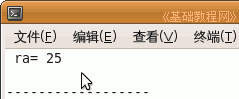
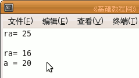
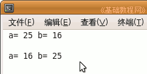

C++ 编程基础教程
作者：TeliuTe 来源：基础教程网
引用和指针类似，都是直接对变量地址操作，区别是引用对象不能改变，引用要直观好理解一些，下面我们来看一个练习；
1、启动 Geany
1）点菜单“应用程序－编程－Geany”启动 Geany ，新建一个 c++ 源程序；
2）点菜单“文件－另存为”命令，以“refer”为文件名，保存文件到自己的文件夹；
2、建立引用
1）引用相当于变量的别名或另外的绰号，本身并不是变量，因此只有声明没有定义；
输入下面的代码：
|
int a = 25; int &ra = a; cout << "ra= " << ra; |
2）第一句定义一个整型变量 a，变量在内存中有地址，可以用变量名 a 来访问，
第二句建立一个引用，类型是整型，与号 & 是定义符号，前面有类型的一定是声明或定义，
第三句是显示 ra，跟指针类似，定义完了就可以直接用 ra 这个名称；

输出 ra 实际上就是输出 a，像是变量 a 又多了一个地址名；
3）接下来我们来看二者之间相互对应关系，继续输入下面的代码；
|
a = 16; cout << "ra= " << ra <<endl; ra = 20; cout << "a = " << a <<endl; |
4）第一句改变变量 a 的值，ra 跟着也改变，
第二句改变引用 ra 的值，a 也跟着变；

|
#include <iostream> using namespace std; int main(int argc, char** argv) { int a = 25; int &ra = a; cout << "ra= " << ra; cout << endl << endl; a = 16; cout << "ra= " << ra <<endl; ra = 20; cout << "a = " << a <<endl; return 0; } |
5）引用和指针用在函数中比较多，函数运行时要使用形参，形参是一个局部临时变量，
函数在结束时要返回运算结果，这个值也要先存放在一个局部临时变量里，
使用引用和指针的地址特性，可以跳过局部变量，直接对传过来的变量进行操作，提高速度，节省内存资源；
6）新建一个c++程序，保存文件名为 swap，输入下面的代码；
|
#include <iostream> using namespace std; void swap (int &rx, int &ry); //声明一个函数，定义在主函数外面 int main(int argc, char** argv) //主函数，调用 swap 函数 { int a =25; int b= 16; cout << " a= " << a; cout << " b= " << b; cout << endl << endl; swap(a,b); //调用函数，直接交换 a,b cout << " a= " << a; cout << " b= " << b; return 0; } void swap(int &rx, int &ry) //定义前面声明的函数 { int temp = rx; rx = ry; //使用的时候直接使用引用名称 ry = temp; } |

本节学习了引用的基本操作，如果你成功地完成了练习，请继续学习；
本教程由86团学校TeliuTe制作|著作权所有
基础教程网：http://teliute.org/
美丽的校园……
转载和引用本站内容，请保留作者和本站链接。